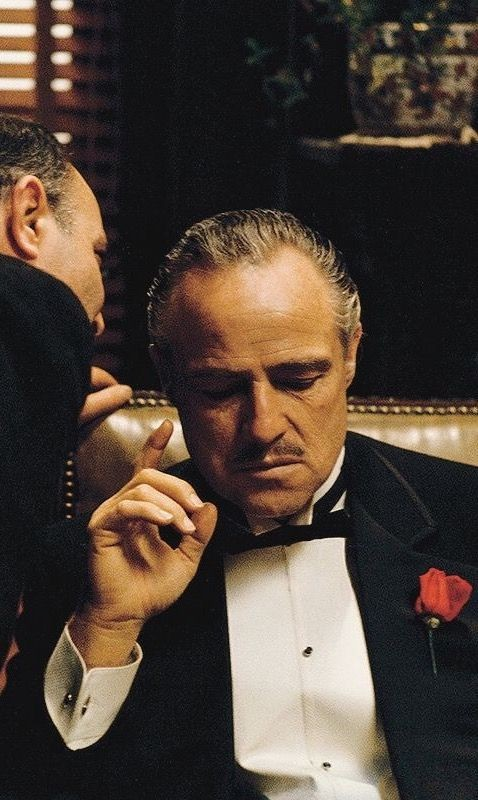
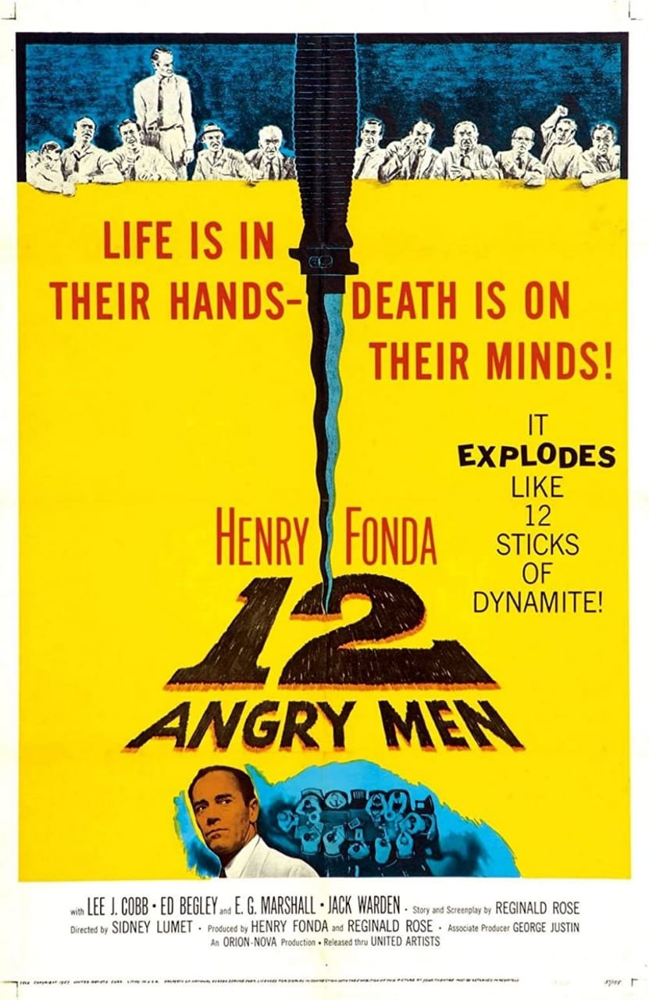
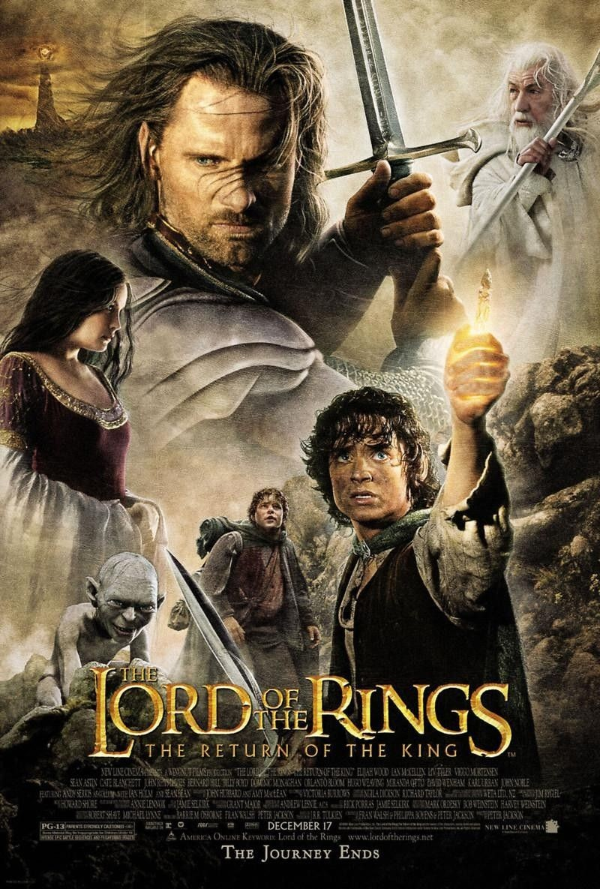
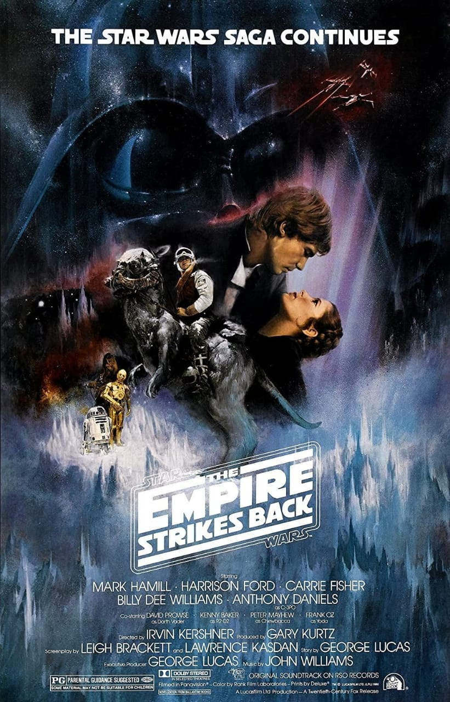

| Rank & Title | ITMV Rating | Genre |
|---|---|---|
| 1. The Shawshank Redemption (1994) | ⭐ 9.2 | Drama |
|  2. The Godfather (1972) | ⭐ 9.2 | Gangster |
| 3. The Dark Knight (2008) | ⭐ 9.0 | Action |
| 4. The Godfather part II (1974) | ⭐ 9.0 | Gangster |
|  5. 12 Angry men (1957) | ⭐ 9.0 | Drama |
| 6. Schindler's List (1993) | ⭐ 8.9 | History |
|  7. The Lord of the Rings: The Return of the King (2003) | ⭐ 8.9 | Adventure |
| 8. Pulp Fiction (1994) | ⭐ 8.8 | Crime |
| 9. The Lord of the Rings: The Fellowship of the Ring (2001) | ⭐ 8.8 | Adventure |
| 10. Forrest Gump (1994) | ⭐ 8.8 | Drama |
| 11. The Good, the Bad and the Ugly (1966) | ⭐ 8.8 | Western |
| 12. Fight Club(1999) | ⭐ 8.7 | Thriller |
 13.
The Lord of the Rings: The Two Towers (2002)
13.
The Lord of the Rings: The Two Towers (2002) |
⭐ 8.7 | Fantasy |
| 14. Inception (2010) | ⭐ 8.7 | Mystery |
|  15. Star Wars: Episode V - The Empire Strikes Back (1980) | ⭐ 8.7 | Fantasy |
Top Rated Movies by Genre
Action
Adventure
Animation
Biography
Comedy
Crime
Drama
Family
Fantasy
Film-Noir
History
Horror
Music
Musical
Mystery
Romance
Sci-Fi
Sport
Thiller
War
Western